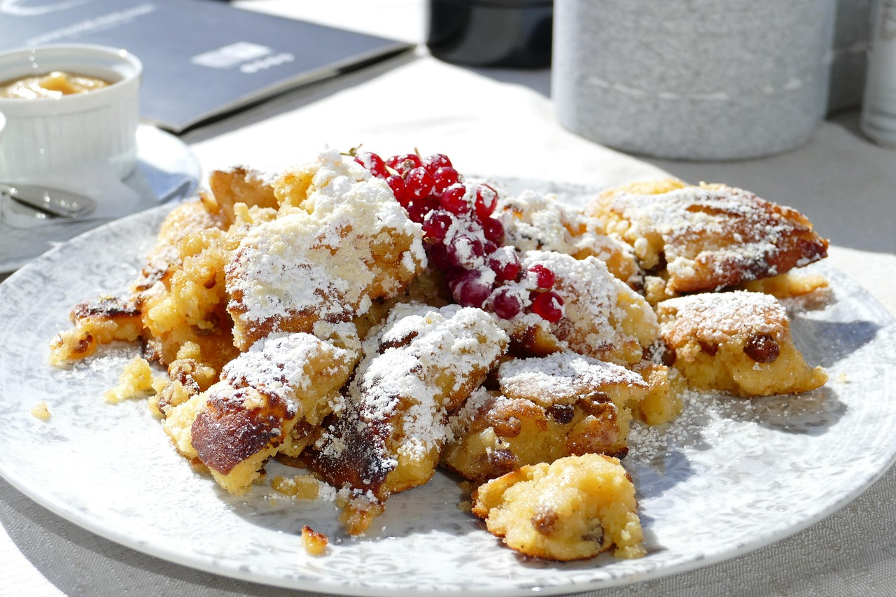

Kaiserschmarren

30 Min.
leicht
01.11.2025
Zutaten
- 250.00 ml Milch
- 150.00 g Mehl
- 2.00 EL Zucker
- 1.00 Pck. Vanillezucker
- 3.00 Eier
- 5.00 g Butter zum Ausbacken
- 2.00 g Salz
- 1.00 Handvoll Puderzucker zum Bestreuen
- Apfelmus oder Johannisbeeren zum Servieren
Zubereitung
ca. 30 Minuten
Gesamtzeit ca. 30 Minuten
- Milch, Mehl, Zucker und Vanillezucker glatt rühren und etwas quellen lassen
- Eier trennen, Eiklar in eine Rührschüssel geben und Dotter unter die Milch-Mehlmasse mischen
- Eiweiß mit einer Prise Salz zu festem Schnee schlagen und vorsichtig unterheben
- Butter in einer Pfanne erhitzen, ein Viertel der Schmarrenmasse in die Pfanne gießen
- Schmarren in vier Teile teilen, wenden und auf der zweiten Seite fertig backen.
- Schmarren in mundgrechte Stücke zereißen, leicht bezuckern und mit Apfelmus oder Johannisbeeren servieren
Rezept erstellt von
Christian